All in One View
Content from What is High-Performance Computing?
Last updated on 2026-08-24 | Edit this page
Estimated time: 20 minutes
Overview
Questions
- What is high-performance computing (HPC)?
- What is a cluster and how is it different from my laptop?
- What is Sagehen?
Objectives
- Define high-performance computing and understand its role in modern research
- Distinguish between personal computers and HPC clusters
- Identify the key components of an HPC cluster
What is High-Performance Computing (HPC)?
High-performance computing refers to using multiple powerful computers (nodes) together to solve computationally intensive problems much faster than a single personal computer could alone. These computers are networked together into what we call a cluster or supercomputer.
Key Advantages of HPC Clusters
- Massive Parallelism: Run computations across dozens or hundreds of cores simultaneously
- Enormous Memory: Some nodes have 500+ GB RAM (your laptop might have 8-16 GB)
- Specialized Hardware: GPUs, high-bandwidth storage, interconnects optimized for communication
- Resource Sharing: Fair allocation of resources among hundreds of researchers
- Professional Administration: Dedicated IT staff manage hardware, software, security, and backups
- Reproducibility: Jobs run the same way every time, independent of what else is running
Introducing Sagehen
Sagehen (sagehen.hpc.pomona.edu) is Pomona College’s research computing cluster. Named after a bird native to California’s Sierra Nevada, Sagehen brings powerful computing resources to Pomona’s research community.

How HPC Clusters Work
The Job Scheduler: SLURM
SLURM (Simple Linux Utility for Resource Management) coordinates all job execution on Sagehen.
How It Works:
- You write a job script describing what you want to run and what resources you need
- You submit the job to SLURM using
sbatchorsrun - SLURM places your job in a queue and monitors resource availability
- When resources become available AND your job has high enough priority, SLURM runs it
- Your job completes and results are written to output files or your home directory
Why SLURM?
- Fairness: Ensures every researcher gets a turn using the cluster
- Efficiency: Runs multiple jobs simultaneously on different nodes
- Reproducibility: Your job runs the same way every time
- Accounting: Tracks resource usage for billing and planning
Challenge 1: HPC vs. Personal Computer
Which of the following tasks would benefit most from running on an HPC cluster instead of your laptop? Select all that apply.
- Writing a research paper in Word
- Training a neural network on 500 GB of image data
- Browsing the web for literature review
- Running a molecular dynamics simulation for 3 weeks
- Checking email
B and D would benefit from HPC.
- A, C, E are everyday tasks that don’t need HPC
- B involves large data and GPU-accelerated computation, perfect for the gpu partition
- D is a long-running simulation that would tie up your laptop for weeks
- High-performance computing enables research that would be infeasible on personal computers
- HPC clusters combine many powerful nodes with fast networks and shared storage
- Sagehen is Pomona College’s HPC cluster, available at no cost to researchers
- SLURM is the job scheduler that manages fair resource allocation among all users
Content from Why Use an HPC Cluster?
Last updated on 2026-08-24 | Edit this page
Estimated time: 25 minutes
Overview
Questions
- When do I need HPC for my research?
- What hardware does Sagehen provide?
- What are the resource limits on Sagehen?
Objectives
- Determine when HPC is appropriate for a research workflow
- Describe Sagehen’s hardware at a high level
- Understand storage locations and their purposes
- Know where to get help with HPC at Pomona
When Do You Need HPC?
Your Laptop Might Be Enough If:
- Your analysis processes small datasets (< 10 GB)
- Your computations finish in minutes or hours
- You’re prototyping code or running exploratory analyses
- You only occasionally need extra computing power
You Need HPC If:
- Your dataset is very large (100 GB to terabytes)
- Your computation takes hours, days, or weeks
- You need to run thousands of analyses or simulations
- You’re training machine learning models
- You’re running molecular dynamics, climate models, or other simulations
- You need specialized hardware like GPUs
Sagehen’s Hardware at a Glance
Compute Nodes (amd partition)
- 12 AMD EPYC compute nodes
- Each node: 128 CPU cores, 500 GB RAM, SSD storage
- Maximum job time: 30 days (720 hours)
- Best for most research workflows
GPU Nodes (gpu partition)
- Multiple GPU-accelerated nodes with 10 GPUs in total
- 4× NVIDIA A100 GPUs (80 GB, high-memory training)
- 4× NVIDIA L40S GPUs (48 GB, tensor-optimized)
- 2× NVIDIA RTX PRO 6000 Blackwell GPUs (96 GB)
- Each node also has 128 CPU cores + 500 GB RAM
- Maximum job time: 30 days
The Head Node
The head node is your entry point to Sagehen: where you log in, submit jobs, and manage files.
- Address:
sagehen.hpc.pomona.edu - CPU: 2 AMD EPYC threads (extremely limited!)
- RAM: 8 GB per user (shared among all users)
Critical: Never Run Jobs on the Head Node!
The head node is shared by hundreds of users. If you run computationally intensive work there, you’ll slow down everyone’s ability to submit jobs. SLURM will enforce this; long-running processes on the head node will be terminated.
Always submit jobs to compute nodes using SLURM.
Storage Overview
Sagehen has multiple storage locations, each with different purposes:
| Location | Quota | Backup | Persistence | Use Case |
|---|---|---|---|---|
/rhome/<myusername> |
~100 GB | Daily | Persistent | Code, config, small results |
/bigdata/lab/<labname> |
1 TB/lab | Daily | Persistent | Lab datasets, shared files |
/scratch/... |
None | No | Temporary (deleted when job completes) | Large intermediate files |
/tmpfs |
~1 GB/job | No | Temporary (deleted when job ends) | Ultra-fast RAM-backed I/O |
Resource Limits per Account
Each user account has limits to ensure fair sharing:
- Per-account CPU core, GPU, and job queue limits apply
- Storage quotas:
/bigdatashares a single 1 TB lab quota with/rhome(BeeGFS) - Contact its-hpc@pomona.edu if you need higher limits for a specific project
Your First HPC Experience on Sagehen
Over the next episodes, you will:
- Log into Sagehen via SSH with two-factor authentication
- Explore the filesystem and understand where your files go
- Learn about partitions and how to choose the right one
- Load software using modules to access pre-installed scientific packages
- Submit your first job to the SLURM scheduler and see results
Challenge 1: Understanding Your Research Needs
Think about a computational project from your own research (or a hypothetical one):
- How much data does it involve? (MB, GB, TB?)
- How long does it typically take to run? (minutes, hours, days?)
- Does it need specialized hardware (GPU)?
- Would running this on Sagehen save you time compared to your laptop?
Write down a few sentences about why (or why not) HPC would be useful for this project.
Your answer should discuss:
- The size of data being processed
- The computational time required
- Whether the problem can be parallelized (run in parallel on multiple cores)
- Availability of specialized hardware needs (GPU, high memory, etc.)
For example: “My machine learning project trains models on 500 GB of image data. On my laptop with 8 cores, this takes 3 weeks. On Sagehen with 128 cores and GPUs, this would probably take 2-3 days, making rapid iteration possible.”
- Use HPC when your data is large, your computation is long, or you need specialized hardware
- Sagehen has 12 compute nodes (128 cores, 500 GB each) and multiple GPU nodes
- The head node is for login and job submission only; never run jobs there
- Different storage locations serve different purposes: home, lab, scratch, tmpfs
- Contact its-hpc@pomona.edu for help or to request higher resource limits
Content from Connecting to Sagehen
Last updated on 2026-08-24 | Edit this page
Estimated time: 30 minutes
Overview
Questions
- How do I connect to Sagehen using SSH?
- How do I set up SSH on my operating system?
- What is the OnDemand web portal?
Objectives
- Understand SSH (Secure Shell) and its role in remote access
- Set up SSH access on macOS, Linux, and Windows
- Know how to use the OnDemand web portal as an alternative
- Perform your first successful login to Sagehen
What is SSH?
SSH (Secure Shell) is a cryptographic network protocol that lets you securely connect to a remote computer and run commands as if you were sitting at that machine.
Why SSH?
- Encryption: All data between your computer and Sagehen is encrypted
- Authentication: Confirms you are who you claim to be (via password + DUO)
- Remote execution: You can run commands on Sagehen from your local machine
- Tunneling: Advanced users can forward network ports for additional security
SSH is the standard protocol for accessing HPC clusters worldwide.
Setting Up SSH Access
On macOS and Linux
macOS and Linux include SSH built-in. Open a terminal and connect:
Step 1: Open Terminal - macOS: Applications > Utilities > Terminal (or Cmd+Space, type “Terminal”) - Linux: Ctrl+Alt+T (most distributions)
Step 2: Connect to Sagehen
Step 3: Accept the Host Key
On your first connection, you’ll see a prompt asking you to verify
the host. Type yes and press Enter.
On Windows with PuTTY
- Download PuTTY from https://www.putty.org/
- In “Host Name”, enter:
sagehen.hpc.pomona.edu - Leave “Port” as 22
- Click “Open”
- Accept the host key and enter your username
On Windows with WSL
WSL provides a native Linux environment. After installing
(wsl --install in PowerShell as Administrator), use the
standard SSH command.
Choosing an SSH Client
- macOS/Linux users: Use the built-in Terminal application
- Windows 10+ users: Use PowerShell (simplest) or WSL (most Linux-like)
- Prefer graphical interface: Use PuTTY
- Advanced users: Use SSH config files or terminal multiplexers (tmux, screen)
DUO Two-Factor Authentication
When you connect, Sagehen requires DUO authentication at https://duo.pomona.edu.

After entering your Pomona password, you’ll see a DUO prompt:
- Option 1: Push (recommended) – approve the notification on your phone
- Option 2: SMS – enter the 6-digit code texted to you
- Option 3: Backup Code – enter a pre-generated backup code

whoami and
hostname.If DUO fails, contact Pomona IT Help Desk: (909) 621-8061 or servicedesk@pomona.edu.
The OnDemand Web Portal
If you prefer not to use SSH, access Sagehen through a web browser:
URL: https://ondemand.hpc.pomona.edu/
You’ll sign in with your Pomona credentials (the same Microsoft sign-in page used for other campus services):

After signing in and completing DUO, you’ll land on the OnDemand dashboard:

Logging Out
When you’re done, disconnect from Sagehen:
Or press Ctrl+D.
Important Security Notes
- Never share your password with anyone, including IT staff
- Close your connection when done; don’t leave it running all day
- SSH keys: Ed25519 is recommended; RSA-4096 is acceptable
- DUO is required: You cannot bypass two-factor authentication

Challenge 1: Your First SSH Connection
If you see [<myusername>@sagehen ~]$ and the
verification commands produce correct output, you’re connected.
Common errors:
- “Permission denied”: verify your username (not email) and password
- “DUO authentication failed”: ensure Duo Mobile is updated; try SMS
- “Connection timeout”: check internet; try a different network
- SSH (Secure Shell) is the standard for securely connecting to remote computers
- macOS and Linux include SSH built-in; Windows users can use PowerShell or PuTTY
- DUO two-factor authentication is required; push notification is fastest
- OnDemand (https://ondemand.hpc.pomona.edu/) provides a graphical alternative to SSH
- Always log out when done with
exitor Ctrl+D
Content from Files and Directories
Last updated on 2026-08-24 | Edit this page
Estimated time: 25 minutes
Overview
Questions
- How do I create, copy, move, and delete files?
- How should I organize my work on Sagehen?
- What are file permissions and how do I change them?
Objectives
- Create and manage files and directories on Sagehen
- Organize research work with a logical directory structure
- Understand file permissions and access controls
- Share files securely with collaborators
Creating and Removing Files and Directories
BASH
# Create a directory
mkdir mydir
# Create nested directories
mkdir -p data/raw/input
# Create an empty file
touch myfile.txt
# Remove an empty directory
rmdir mydir
# Remove a file (be careful!)
rm myfile.txt
# Remove a directory and everything in it (DANGEROUS!)
rm -rf mydirNever Use rm -rf Casually!
The command rm -rf directory recursively deletes
everything permanently; there is no trash or undo. Always list files
first to confirm:
BASH
# List files FIRST to confirm what you're deleting
ls -la mydir
# Then delete
rm -rf mydir
# Or use interactive mode (walks the tree and asks about every single file before deleting, reply y or n (yes or not))
rm -ri mydir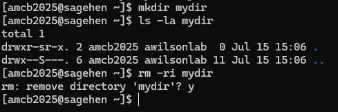
{alt=‘A short terminal transcript on Sagehen. mkdir creates a directory named mydir, ls -la shows it is empty, and rm -ri prompts remove directory ’mydir’? before deleting it after the user types y.’}Working with Files
BASH
# View file contents
cat myfile.txt
# View beginning of file (first 10 lines)
head myfile.txt
# View end of file (last 10 lines)
tail myfile.txt
# Search for text in a file
grep "pattern" myfile.txt
# Count lines in a file
wc -l myfile.txt
# Search for files by name
find . -name "*.txt"
# Find recently modified files
find . -mtime -7Organizing Your Work
Recommended Directory Structure
Create a logical organization in your home directory:
BASH
cd ~
mkdir -p projects/project1
mkdir -p projects/project2
mkdir -p code
mkdir -p data
mkdir -p resultsExample project structure:
/rhome/<myusername>/
├── projects/
│ ├── research-1/
│ │ ├── code/
│ │ ├── data/
│ │ └── results/
│ └── research-2/
├── code/
├── scripts/
└── workshop-0/File Permissions
Every file and directory has permissions controlling who can read, write, and execute it.
Understanding Permission Output
Output example:
-rw-r--r-- 1 username groupname 1024 Mar 31 10:30 myfile.txt-
-= regular file (d= directory) -
rw-= owner can read and write -
r--= group can only read -
r--= others can only read
Changing Permissions
BASH
# Make a file executable
chmod +x script.sh
# Make a file read-only
chmod -w myfile.txt
# Allow group to write
chmod g+w myfile.txt
# Common numeric patterns
chmod 644 myfile.txt # rw-r--r--
chmod 755 script.sh # rwxr-xr-x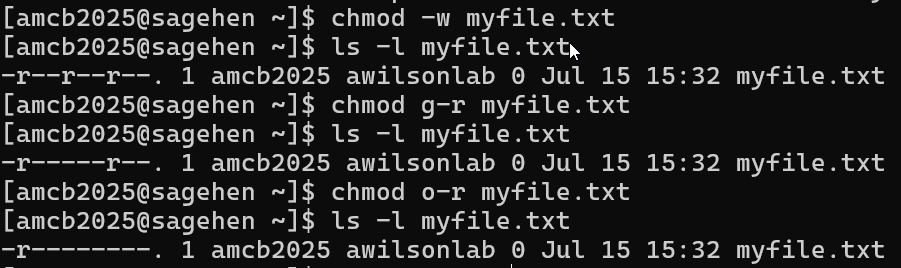
ls -l.Challenge 1: Create a Project Structure
Create a directory structure for this workshop and practice file operations.
Steps:
-
Create directories:
Navigate into the directory:
cd ~/workshop-0Check your location:
pwdCreate a test file:
echo "Hello Sagehen" > test.txtView it:
cat test.txtList everything:
ls -lahReturn home:
cd ~List recursively:
ls -R workshop-0
Questions:
- What path does
pwdshow when in workshop-0? - How many directories did you create?
pwd should show
/rhome/<myusername>/workshop-0.
You created 4 directories total: workshop-0 (main) plus
data, results, scripts
(subdirectories).
The command ls -R workshop-0 shows the entire tree,
including the test.txt file you created.
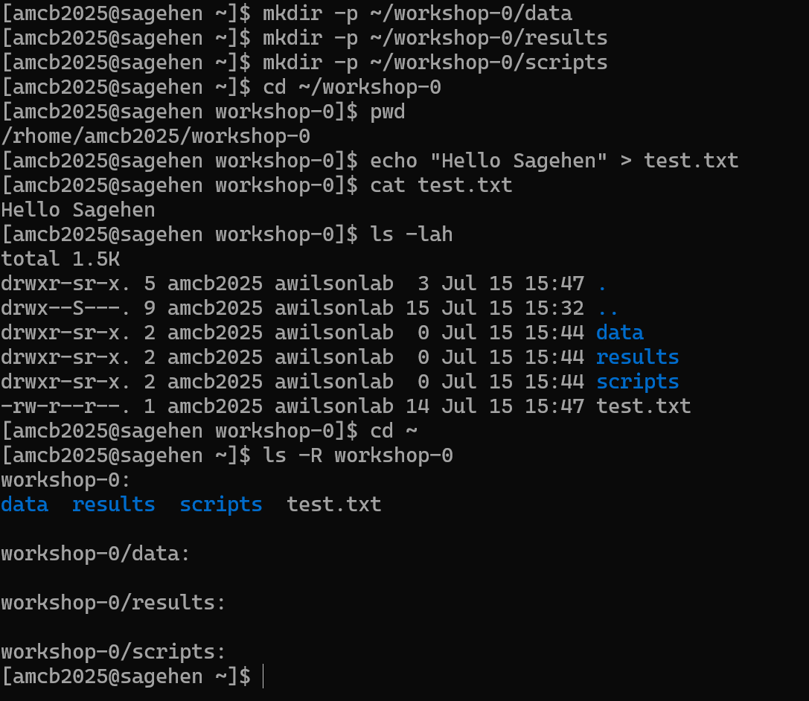
- Use
mkdir -pto create nested directories in one command - Be extremely careful with
rm -rf; always list contents first - Organize work into logical directories: projects, code, data, results
- File permissions control read, write, and execute access for owner, group, and others
- Use
chmodto change permissions; share files via/bigdataor by adjusting group permissions
Content from Cluster Architecture
Last updated on 2026-08-24 | Edit this page
Estimated time: 20 minutes
Overview
Questions
- What are partitions and why does Sagehen have three?
- What hardware is in each partition?
- How do I view cluster status?
Objectives
- Understand the concept of partitions in HPC clusters
- Learn Sagehen’s specific hardware specifications for each partition
- Use
sinfoto query cluster status
What are Partitions?
A partition in SLURM is a logical grouping of compute nodes with shared characteristics. Sagehen uses partitions to organize nodes by hardware type, time limits, and priority.
Think of partitions like different sections of a library: fiction, non-fiction, reference. Each section is organized for its purpose.
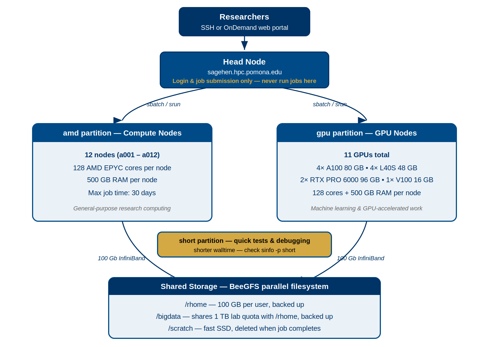
The “amd” Partition (Standard Compute)
The primary general-purpose partition for most research.
- 12 compute nodes
- Cores per node: 128 (AMD EPYC processors)
- Memory per node: 500 GB
- Interconnect: 100 Gb Infiniband
- Maximum job duration: 720 hours (30 days)
When to use: Most research computations, data processing, simulations, first-time job submissions.
The “gpu” Partition (GPU Acceleration)
For research requiring GPU acceleration.
- Multiple GPU-equipped nodes
- CPUs: 128 cores per node, 500 GB RAM
- GPUs:
| GPU Type | Count | GPU Memory | Strength |
|---|---|---|---|
| NVIDIA A100 | 4 | 80 GB each | Excellent for training |
| NVIDIA L40S | 4 | 48 GB each | Tensor-optimized / inference |
| NVIDIA RTX PRO 6000 | 2 | 96 GB each | Largest memory on the cluster (Blackwell) |
That’s 10 GPUs in total across the gpu partition.
- Maximum job duration: 720 hours (30 days)
When to use: CUDA/cuDNN code, deep learning training, GPU-accelerated molecular dynamics.
GPU Allocation Matters
Request only the GPUs you need:
- Deep learning: Usually 1-2 GPUs per job
- Multi-GPU training: 2-4 GPUs (if your code supports it)
- Standard molecular dynamics: 1 GPU
Each GPU reserved limits availability for others. Be considerate!
The “short” Partition (Quick Jobs and Debugging)
For quick test jobs, debugging job scripts, and rapid prototyping.
-
Shorter maximum walltime than
amdandgpu(verify withsinfo -p short) - Higher priority for short-duration work
- Useful for sanity-checking software and submission scripts before running long jobs
When to use: Debugging job scripts, quick test runs,
single-task interactive debugging, and any work that finishes within the
short partition’s walltime limit.
Viewing Cluster Status with sinfo
BASH
# See all partitions
sinfo
# More detailed output
sinfo -l
# Show only a specific partition
sinfo -p amd
# Show all nodes and their state
sinfo -NExample output:
PARTITION AVAIL TIMELIMIT NODES STATE
amd up 30-00:00:00 12 alloc
gpu up 30-00:00:00 4 alloc
short up 2:00:00 4 idle(The exact short partition walltime limit may differ —
always check sinfo -p short for current values.)
-
AVAIL: Is the partition available (up/down)? -
TIMELIMIT: Maximum job duration -
STATE: Current state (alloc=some allocated, idle=free, down=unavailable)
Challenge 1: Exploring Sagehen’s Partitions
Query the cluster to understand its configuration.
Steps:
- View partition information:
sinfo -l - View node details:
sinfo -N -l - Check the head node CPU:
lscpu | head -20
Questions:
- How many nodes are in the “amd” partition?
- What is the maximum walltime for the amd partition?
- How many cores does a compute node have?
- amd partition: 12 nodes
- amd partition maximum walltime: 720 hours (30 days)
- Each compute node: 128 cores
All standard compute nodes on Sagehen have identical configurations.
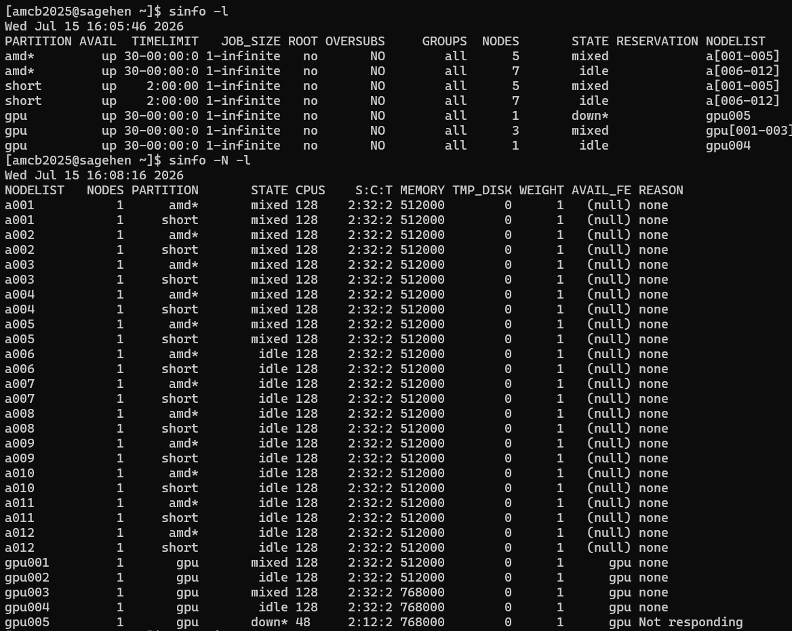
sinfo -l and
sinfo -N -l output: the three partitions and per-node cores
and memory.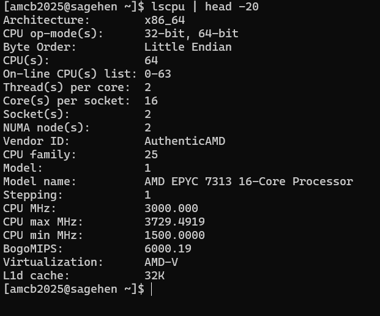
lscpu on the head node — note it
reports 64 threads on dual AMD EPYC 7313 chips, not the 128 cores of a
compute node.- Partitions group nodes by hardware type and enforce time/resource limits
- Sagehen has three partitions:
amd(general purpose),gpu(GPU-accelerated), andshort(quick / test / debug jobs with a shorter walltime) - Each compute node has 128 AMD EPYC cores and 500 GB RAM
- GPU partition offers 10 GPUs: A100, L40S, and RTX PRO 6000
- Use
sinfoto check partition status, node states, and available resources - Maximum job time: 720 hours (30 days) on
amdandgpu; checksinfo -p shortfor theshortpartition limit
Content from Understanding Nodes and Partitions
Last updated on 2026-08-24 | Edit this page
Estimated time: 25 minutes
Overview
Questions
- What are nodes and cores?
- How does SLURM allocate resources?
- How do I choose the right partition for my job?
- What are the resource limits?
Objectives
- Distinguish between CPU cores, sockets, and nodes
- Understand how SLURM allocates nodes to jobs
- Match job requirements to the appropriate partition
- Know resource limits and how to request increases
Nodes and Cores: The Hierarchy
Understanding the Terminology
- Node: A complete computer with its own memory, storage, and processors
- Socket: A physical CPU processor installed in a node
- Core: An individual processing unit within a socket (128 per node on Sagehen)
- Thread: A logical processing unit (some CPUs support hyperthreading)
Sagehen (the cluster)
├── amd partition (12 nodes)
│ └── Each: 128 cores, 500 GB RAM
├── gpu partition (multiple nodes)
│ └── Each: 128 cores, 500 GB RAM + NVIDIA GPUs
└── short partition (quick / test / debug jobs)
└── Shorter walltime limit; check `sinfo -p short`How SLURM Allocates Resources
When you submit a job, SLURM:
- Finds available nodes matching your partition and resource request
- Selects the best fit (minimizing wasted resources)
- Allocates entire cores to your job (no fractional cores)
- Locks the resources until your job completes
Example Allocations
32-core job: SLURM allocates 32 cores on one node; the remaining 96 cores on that node are available for other jobs.
256-core job (2 nodes): SLURM allocates 128 cores on node 1 and 128 cores on node 2. Your job uses both nodes together.
1-GPU job: SLURM allocates 1 GPU plus associated CPU cores on a GPU node.
The Cost of Wasting Resources
Be as accurate as possible in your resource requests:
- Job requests 64 cores, uses 32 -> 32 cores wasted per hour
- Job requests 500 GB RAM, uses 50 GB -> 450 GB wasted
- Job requests 2 days, finishes in 2 hours -> 46 hours of node time wasted
Over-requesting hurts other users waiting in the queue.
Choosing the Right Partition
Decision Tree
- Is your job GPU-accelerated? -> Use the gpu partition
-
Quick test, debug, or short prototype run? ->
Use the short partition (shorter walltime limit, check
sinfo -p short) - Everything else (production CPU jobs) -> Use the amd partition
![Three-column comparison of Sagehen partitions. The amd default partition has 12 nodes a001 through a012 with 128 AMD EPYC cores and 500 GB RAM per node, a max walltime of 720 hours or 30 days, and is best for long CPU jobs, simulations, data processing, and multi-node MPI. The gpu partition has 10 GPUs: four A100 80 GB, four L40S 48 GB, and two RTX PRO 6000 96 GB, with a max walltime of 720 hours, best for machine learning, CUDA code, and GPU-accelerated computing. The short partition is for quick jobs and debugging with a shorter max walltime; check sinfo -p short.](../fig/07-partition-comparison.png)
Resource Limits
| Resource | Limit |
|---|---|
| CPU cores per job | Up to 128 (one full node) |
| Memory per job | Up to 500 GB (node maximum) |
| GPUs per job | Per-account limits apply |
| Jobs in queue | Per-account limits apply |
| Max job time (amd/gpu) | 720 hours (30 days) |
| Max job time (short) | Shorter than amd/gpu — check sinfo -p short
|
Exceeding Limits
If you need more resources for a specific project:
- Email its-hpc@pomona.edu with your research description, resource needs, and justification
- Limits may be temporarily increased for special projects
Examining Hardware Details
BASH
# See CPU count and details
lscpu
# See memory
free -h
# See GPU devices (on GPU nodes only)
nvidia-smiChallenge 1: Matching Jobs to Partitions
For each scenario, decide which partition is best and explain why:
- You’re training a deep learning model that uses CUDA and takes 3 days
- You’re debugging a Python script that takes 5 minutes
- You’re running a statistical analysis on genetic data (64 cores, 8 hours)
- You’re running an MPI simulation requiring 256 cores across multiple nodes
gpu partition – Deep learning needs GPU acceleration. 3 days fits within the 30-day limit.
short partition – Quick debugging (5 minutes) is the canonical use case for the
shortpartition. Use--partition=shortwith a small--time(e.g.,--time=00:10:00).amd partition – Standard compute job. Doesn’t need GPU. 64 cores fit on one node.
amd partition – Multi-node simulation. 256 cores = 2 nodes (128+128). Doesn’t need GPU.
- Each Sagehen node has 128 cores and 500 GB RAM; SLURM allocates whole cores
- SLURM finds the best-fit nodes for your resource request automatically
- Use
gpufor GPU-accelerated work,shortfor quick test / debug jobs (shorter walltime), andamdfor general CPU production work - Request only the resources you need to avoid wasting shared capacity
- Contact its-hpc@pomona.edu if you need limits increased for a project
Content from Software Modules Basics
Last updated on 2026-08-24 | Edit this page
Estimated time: 30 minutes
Overview
Questions
- Why can’t I just use any software on Sagehen?
- What is the module system?
- How do I find, load, and unload software modules?
- What if I need software that’s not installed?
Objectives
- Understand why HPC clusters use module systems
- Search for available software with
module avail - Load and unload modules for your work
- Manage module dependencies and version conflicts
- Know how to request new software installations
Why Modules? The Problem They Solve
On a personal computer, you install software globally. On a shared cluster with hundreds of researchers, this creates conflicts:
- Alice needs Python 3.8; Bob needs Python 3.11; Charlie needs Python 2.7
- Package A needs Library X version 2.0; Package B needs version 3.0
- Some code compiles best with GCC 9; other code needs GCC 11
A module system allows users to load and unload software dynamically, so multiple versions coexist without conflict.
Lmod: Sagehen’s Module Manager
Sagehen uses Lmod with 90+ pre-installed modules covering programming languages, compilers, scientific libraries, bioinformatics tools, and more.
Viewing Available Modules
BASH
# List all available modules
module avail
# Search for a specific module
module avail miniconda3
# Show module details without loading
module show miniconda3/py313_26.3.2-2
module avail listing on
Sagehen — miniconda3’s versions are in the middle column, with
(D) marking the default.Loading and Unloading Modules
BASH
# Load default Python
module load miniconda3
# Load a specific version
module load miniconda3/py313_26.3.2-2
# Load multiple modules at once (check `module avail` for the exact
# names and versions installed on Sagehen)
module load miniconda3/py313_26.3.2-2
# Check what's loaded
module list
# Unload a specific module
module unload miniconda3
# Unload all modules
module purgeWhat Happens When You Load a Module
Loading a module modifies environment variables (PATH,
LD_LIBRARY_PATH, etc.) so the system finds the right
software executables and libraries:
BASH
# Before loading python
echo $PATH
# /usr/local/bin:/usr/bin:/bin:...
module load miniconda3/py313_26.3.2-2
# After loading python
echo $PATH
# /opt/linux/rocky/8/software/miniconda3/py313_26.3.2-2/bin:... {alt=‘A
terminal transcript comparing echo PATH before and after module load.
After loading miniconda3/py313_26.3.2-2, PATH begins with that module’s
bin and condabin directories under /opt/linux/rocky/8/software.’}
{alt=‘A
terminal transcript comparing echo PATH before and after module load.
After loading miniconda3/py313_26.3.2-2, PATH begins with that module’s
bin and condabin directories under /opt/linux/rocky/8/software.’}
Module Families and Conflicts
Some modules belong to the same family. Loading one auto-unloads the other:
BASH
# Loading a second version of the same package auto-swaps it
module load cuda/11.8.0
module load cuda/12.2.1
# Lmod reports the swap: cuda/11.8.0 => cuda/12.2.1The same applies to Python versions – only one can be active at a time.
Requesting New Software
If you need software that’s not installed:
- Email its-hpc@pomona.edu with software name, version, use case, and documentation link
- Include your username and how many people would use it
- Expected response: within a few business days
Self-Install Alternative
You can install software in your home directory if needed:
BASH
mkdir -p ~/software
cd ~/software
# Download, configure, build with --prefix=~/software/
export PATH=~/software/bin:$PATHChallenge 1: Loading and Switching Modules
Practice loading, switching, and purging modules.
Steps:
Load default Python:
module load miniconda3Check the version:
python --version-
Switch to a different version:
List loaded modules:
module list-
Purge and reload:
Questions:
- Which version loaded by default?
- What happens after
module purge? - Can you have two Python versions loaded at once?
- The default
module load miniconda3loads the most recent stable version -
module purgeremoves all loaded modules;module listshows nothing - No, loading a second Python version auto-unloads the first (same module family)
This demonstrates Lmod’s ability to manage multiple versions cleanly.
 {alt=‘Terminal
transcript of an Lmod session. module list shows
miniconda3/py313_26.3.2-2 as the only loaded module; after module purge,
module list reports no modules loaded; the user then loads
miniconda3/py312_24.9.2-0 and echo PATH shows that version’s bin
directory first.’}
{alt=‘Terminal
transcript of an Lmod session. module list shows
miniconda3/py313_26.3.2-2 as the only loaded module; after module purge,
module list reports no modules loaded; the user then loads
miniconda3/py312_24.9.2-0 and echo PATH shows that version’s bin
directory first.’}
- The module system solves software version conflicts on shared HPC clusters
- Sagehen uses Lmod with 90+ pre-installed packages
- Use
module availto search,module loadto activate,module purgeto reset - Only one version of each module family can be loaded at a time
- Always use
module purgeat the start of job scripts for reproducibility - Request new software at its-hpc@pomona.edu
Content from Running Your First Job
Last updated on 2026-08-24 | Edit this page
Estimated time: 40 minutes
Overview
Questions
- What is a batch script?
- How do I submit a job to Sagehen?
- How do I monitor my job and retrieve output?
Objectives
- Understand the difference between interactive and batch jobs
- Write a simple SLURM batch script
- Submit jobs with
sbatchand monitor withsqueueandsacct - Retrieve and interpret job output
- Troubleshoot common job submission issues
Batch Jobs vs. Interactive Jobs
Anatomy of a SLURM Batch Script
The script below is an illustration to read, not to run – we’ll walk through what each line means. You’ll write and submit your own working script in the challenge at the end of this episode.
BASH
#!/bin/bash
#SBATCH --job-name=hello_hpc
#SBATCH --partition=short
#SBATCH --time=00:10:00
#SBATCH --ntasks=1
#SBATCH --cpus-per-task=1
#SBATCH --mem=1G
#SBATCH --output=%j_output.log
module purge
module load miniconda3/py313_26.3.2-2
echo "Host: $(hostname)"
echo "Job ID: $SLURM_JOB_ID"
echo "Start time: $(date)"
python -c "print('Hello from Sagehen!')"
echo "End time: $(date)"This first-job example uses the short partition because
it’s a quick test. For production jobs longer than the
short walltime limit, use --partition=amd.
Key SBATCH Directives
| Directive | Purpose | Example |
|---|---|---|
--job-name |
Human-readable name | hello_hpc |
--partition |
Which partition |
amd, gpu, short
|
--time |
Maximum runtime |
HH:MM:SS or D-HH:MM:SS
|
--ntasks |
Number of tasks |
1 (usually) |
--cpus-per-task |
Cores per task |
1 to 128
|
--mem |
Memory per job |
1G, 100G, 500M
|
--output |
Output file (%j = job ID) |
%j_output.log |
--gres |
GPU request |
gpu:1, gpu:2
|
Submitting and Monitoring
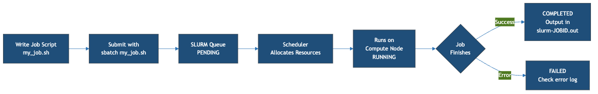
Submit with sbatch
After submission, SLURM queues the job, allocates resources when available, runs your script, and writes output to the specified file. You can log out while it runs.
Common Resource Patterns
BASH
# Quick test (2 minutes, short partition)
#SBATCH --partition=short
#SBATCH --time=00:02:00
#SBATCH --cpus-per-task=1
#SBATCH --mem=500M
# Standard CPU job (8 hours)
#SBATCH --partition=amd
#SBATCH --time=08:00:00
#SBATCH --cpus-per-task=32
#SBATCH --mem=100G
# GPU job (deep learning)
#SBATCH --partition=gpu
#SBATCH --time=72:00:00
#SBATCH --cpus-per-task=16
#SBATCH --mem=100G
#SBATCH --gres=gpu:2Troubleshooting
Job Won’t Start (Status: PD)
- Wait longer (resources might be occupied)
- Reduce resource requests
- Lower your
--timerequest so the scheduler can back-fill your job sooner - Check cluster status:
sinfo
Job Terminated Unexpectedly
BASH
sacct -j 12345
# TIMEOUT = increase --time
# OUT_OF_MEMORY = increase --mem
# FAILED = check output for script errorsBest Practices for Job Scripts
- Always use
module purgeat the start - Be specific with resource requests (don’t over-request)
- Add comments explaining what your job does
- Include echo statements so you can see what happened
- Test on the
shortpartition before launching long production runs onamdorgpu
Challenge 1: Submit Your First Job
Create and submit a batch job that runs a Python computation.
Steps:
-
Move into your workshop directory (job output lands in the directory you submit from):
-
Create the Python script:
-
Create the batch script:
BASH
cat > ~/workshop-0/fib_job.sh << 'EOF' #!/bin/bash #SBATCH --job-name=fibonacci #SBATCH --partition=short #SBATCH --time=00:05:00 #SBATCH --ntasks=1 #SBATCH --cpus-per-task=1 #SBATCH --mem=1G #SBATCH --output=%j_fib.log module purge module load miniconda3/py313_26.3.2-2 echo "Running Fibonacci calculation..." python ~/workshop-0/fibonacci.py echo "Done!" EOF Submit:
sbatch fib_job.shMonitor:
squeue -u $USERView output:
cat ~/workshop-0/*_fib.log
Question: What is Fibonacci(20)?
Fibonacci(20) = 6765
The job should complete in seconds. Check with
sacct -j JOBID and view the log file to confirm all
Fibonacci numbers were printed.
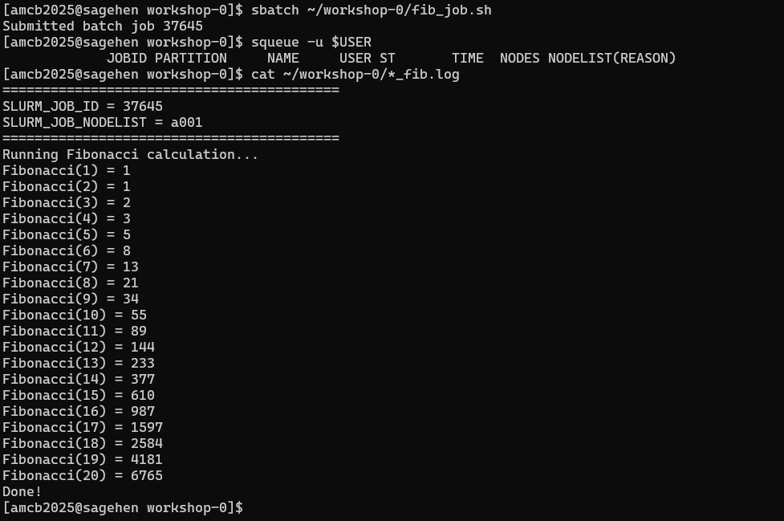
squeue is already empty by the time
you check.- Batch jobs are scripts submitted with
sbatch; they run when resources are available - Every batch script needs
#!/bin/bashand SBATCH directives for resources - Key directives: –partition, –time, –cpus-per-task, –mem, –output
- Monitor jobs with
squeue -u $USER(running) orsacct(history) - Always use
module purgein job scripts for reproducibility - Test on the
shortpartition before submitting long production jobs toamdorgpu - Common failures: TIMEOUT (increase –time), OUT_OF_MEMORY (increase –mem)
Content from Next Steps and Resources
Last updated on 2026-08-24 | Edit this page
Estimated time: 15 minutes
Overview
Questions
- What other workshops are available?
- Where do I go for help?
- How do I handle more complex job patterns?
Objectives
- Know where to find additional HPC training resources
- Understand common next-step workflows beyond basic job submission
- Know how to get help from the HPC team
Beyond Your First Job
Now that you can connect, navigate files, load modules, and submit jobs, here are common next steps:
Interactive Jobs for Development
Use srun for interactive sessions on compute nodes:
This gives you a bash shell on a compute node where you can test code interactively without running on the head node.
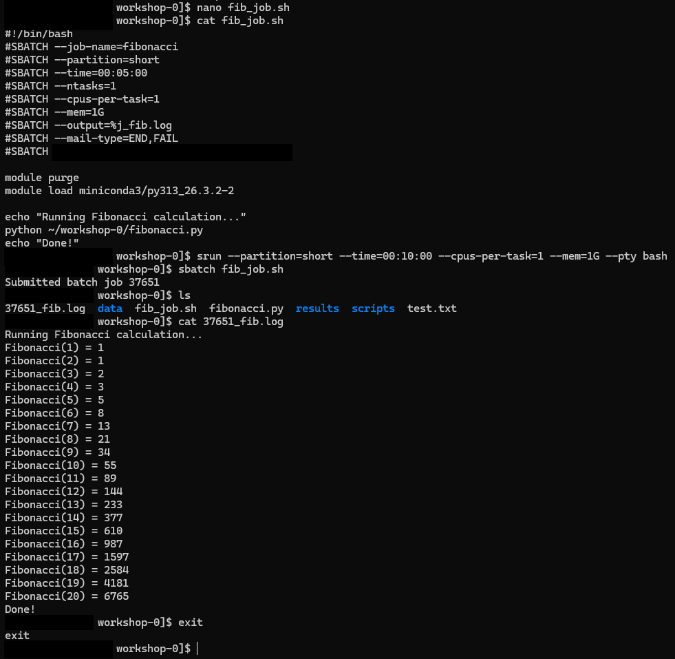
sagehen to compute node
a001 after srun --pty bash.Email Notifications
Get notified when your job finishes:
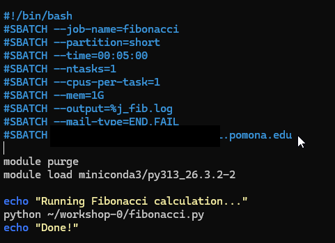
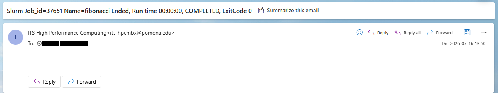
Additional Workshop Topics
The Pomona College HPC Workshop Series covers many advanced topics:
- SLURM Job Scheduling: Advanced batch scripting, job arrays, dependencies, GPU workflows
- Data Transfer and Management: Moving data to/from Sagehen with scp, rsync, Globus
- Security and Access: SSH keys, data classification, encrypted storage
- OnDemand Portal: Graphical access, Jupyter, RStudio on the cluster
- Domain-Specific Workshops: R, Python, bioinformatics, and more
Getting Help
HPC Support
- Email: its-hpc@pomona.edu
-
Include in your email:
- Your username
- Job ID (if applicable)
- Error messages or output
- What you expected vs. what happened
Common Self-Help Commands
BASH
# Check cluster status
sinfo
# Check your running/pending jobs
squeue -u $USER
# Check completed job details
sacct -j JOBID --format=JobID,JobName,State,Elapsed,MaxRSS
# Check your storage quota
quota_check.sh
# See what modules are loaded
module listQuick Reference Card
| Task | Command |
|---|---|
| Connect | ssh <myusername>@sagehen.hpc.pomona.edu |
| Submit job | sbatch script.sh |
| Check jobs | squeue -u $USER |
| Job history | sacct -u $USER |
| Cancel job | scancel JOBID |
| Cluster status | sinfo |
| Load software | module load package |
| Reset modules | module purge |
| Check quota | quota_check.sh |
| OnDemand | https://ondemand.hpc.pomona.edu |
Challenge 1: Plan Your First Real Project
Think about a research computation you want to run on Sagehen. Write down a plan covering:
- What software/modules do you need?
- How much memory and how many cores?
- How long will it take?
- Which partition should you use?
- What input data do you need to upload?
- Where should output be saved?
Draft a skeleton batch script for this project (just the SBATCH headers and module loads; the actual command can be a placeholder).
A good plan should include:
BASH
#!/bin/bash
#SBATCH --job-name=my_research
#SBATCH --partition=amd # or `gpu` for GPU jobs, `short` for quick tests
#SBATCH --time=08:00:00 # realistic estimate
#SBATCH --cpus-per-task=16 # based on your code's parallelism
#SBATCH --mem=64G # based on data size
#SBATCH --output=%j_output.log
module purge
module load miniconda3/py313_26.3.2-2 # or whatever you need (check module avail)
# Your research command here
python my_analysis.py --input /bigdata/lab/<labname>/data --output ~/results/Key considerations: - Start with a short test on the
short partition (small --time, e.g., 10–30
minutes) before launching production work on amd or
gpu - Scale up resources once you know what your code needs
- Save important output to /rhome or /bigdata,
not /scratch
- Use
srun --pty bashfor interactive compute sessions instead of running on the head node - Email notifications keep you informed about job completion and failures
- Customize
~/.bashrcfor a more productive login environment - Additional workshops cover SLURM advanced features, data transfer, security, and more
- Contact its-hpc@pomona.edu for help; include your username, job ID, and error messages
- Use
quota_check.sh(notdu) to check BeeGFS storage usage